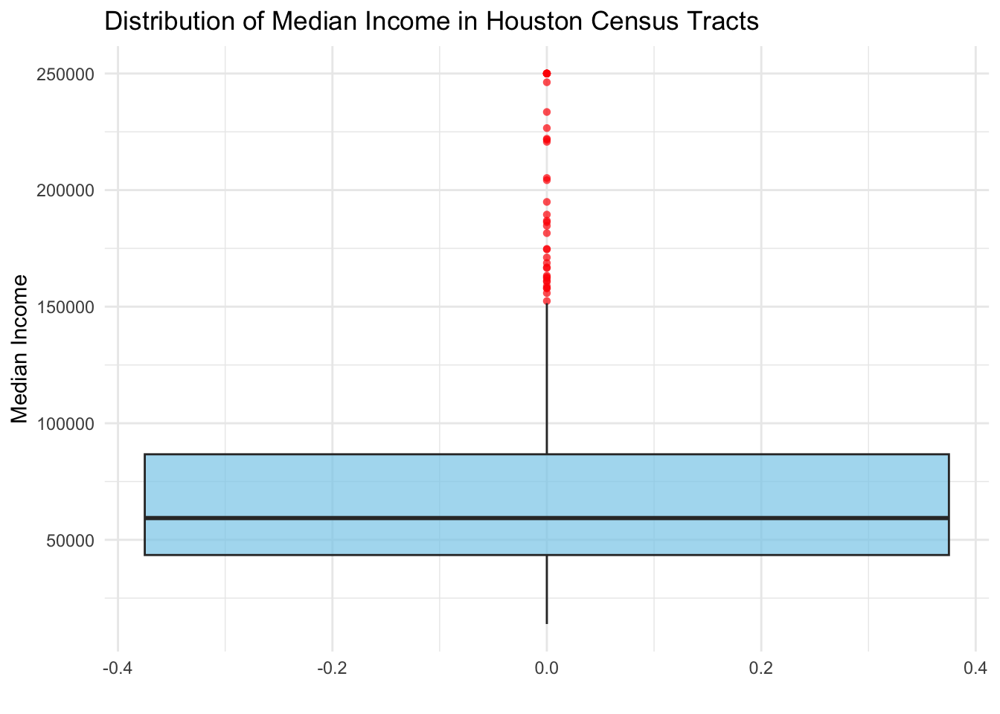

#load required libraries
library(stars)
library(sf)
library(tidyverse)
library(here)
library(terra)
library(tmap)
library(dplyr)
library(ggplot2)Analysis of EJ Impacts of the 2021 Texas Winter Storm
Load Required Libraries and Files
# Read the satellite data files (VIIRS Night Lights)
houston_feb7v5 <- stars::read_stars(here("data", "VNP46A1", "VNP46A1.A2021038.h08v05.001.2021039064328.tif"))
houston_feb7v6 <- stars::read_stars(here("data", "VNP46A1", "VNP46A1.A2021038.h08v06.001.2021039064329.tif"))
houston_feb16v5 <- stars::read_stars(here("data", "VNP46A1", "VNP46A1.A2021047.h08v05.001.2021048091106.tif"))
houston_feb16v6 <- stars::read_stars(here("data", "VNP46A1", "VNP46A1.A2021047.h08v06.001.2021048091105.tif"))
# Merge the tiles side-by-side
houston_feb7<- c(houston_feb7v5, houston_feb7v6, along = "y")
houston_feb16<-c(houston_feb16v5, houston_feb16v6, along = "y")# Read only highways (motorways) from the roads file
highways <- st_read(here("data", "gis_osm_roads_free_1.gpkg"),
query = "SELECT * FROM gis_osm_roads_free_1 WHERE fclass='motorway'")Reading query `SELECT * FROM gis_osm_roads_free_1 WHERE fclass='motorway''
from data source `/Users/sp365/Documents/EDS 223/HW/EJ Impacts of the 2021 Texas Winter Storm/data/gis_osm_roads_free_1.gpkg'
using driver `GPKG'
Simple feature collection with 6085 features and 10 fields
Geometry type: LINESTRING
Dimension: XY
Bounding box: xmin: -96.50429 ymin: 29.00174 xmax: -94.39619 ymax: 30.50886
Geodetic CRS: WGS 84#check for crs compatibility
if (st_crs(houston_feb7v5)==st_crs(highways)) {
print("Same Coordinate System")
} else {
highways = st_transform(highways, crs = st_crs(houston_feb7v5))
}[1] "Same Coordinate System"# Read only residential buildings from the buildings file
buildings <- st_read(
here("data", "gis_osm_buildings_a_free_1.gpkg"),
query = "SELECT * FROM gis_osm_buildings_a_free_1 WHERE (type IS NULL AND name IS NULL) OR type IN ('residential', 'apartments', 'house', 'static_caravan', 'detached')"
)Reading query `SELECT * FROM gis_osm_buildings_a_free_1 WHERE (type IS NULL AND name IS NULL) OR type IN ('residential', 'apartments', 'house', 'static_caravan', 'detached')'
from data source `/Users/sp365/Documents/EDS 223/HW/EJ Impacts of the 2021 Texas Winter Storm/data/gis_osm_buildings_a_free_1.gpkg'
using driver `GPKG'
Simple feature collection with 475941 features and 5 fields
Geometry type: MULTIPOLYGON
Dimension: XY
Bounding box: xmin: -96.50055 ymin: 29.00344 xmax: -94.53285 ymax: 30.50393
Geodetic CRS: WGS 84if (st_crs(houston_feb7v5)==st_crs(buildings)) {
print("Same Coordinate System")
} else {
buildings = st_transform(buildings, crs = st_crs(houston_feb7v5))
}[1] "Same Coordinate System"# Read ACS data for Texas and income information
# Define the path to the geodatabase
gdb_path <- here("data", "ACS_2019_5YR_TRACT_48_TEXAS.gdb")
# Read the first layer
acs_data <- st_read(gdb_path, layer = "ACS_2019_5YR_TRACT_48_TEXAS")Reading layer `ACS_2019_5YR_TRACT_48_TEXAS' from data source
`/Users/sp365/Documents/EDS 223/HW/EJ Impacts of the 2021 Texas Winter Storm/data/ACS_2019_5YR_TRACT_48_TEXAS.gdb'
using driver `OpenFileGDB'
Simple feature collection with 5265 features and 15 fields
Geometry type: MULTIPOLYGON
Dimension: XY
Bounding box: xmin: -106.6456 ymin: 25.83716 xmax: -93.50804 ymax: 36.5007
Geodetic CRS: NAD83income_data <- st_read(gdb_path, layer = "X19_INCOME") %>%
as.data.frame() %>%
select(GEOID, B19013e1)Reading layer `X19_INCOME' from data source
`/Users/sp365/Documents/EDS 223/HW/EJ Impacts of the 2021 Texas Winter Storm/data/ACS_2019_5YR_TRACT_48_TEXAS.gdb'
using driver `OpenFileGDB'ct_data <- acs_data %>%
left_join(income_data, by = c("GEOID_Data" = "GEOID"))
if (st_crs(houston_feb7v5)==st_crs(ct_data)) {
print("Same Coordinate Systems")
} else {
warning("Different Coordinate Systems, Transforming the Coordinate Systems")
ct_data = st_transform(ct_data, crs = st_crs(houston_feb7v5))
}Identify Buildings with Blackouts
plot(houston_feb7,
main = "Nightlight Intensity in Houston - February 7")plot(houston_feb16,
main = "Nightlight Intensity in Houston - February 16")# Calculate the difference in intensity (Feb 16 - Feb 7)
intensity_diff <- houston_feb16 - houston_feb7#Create a blackout mask to detect the buildings in blackout
# Reclassify raster: cells with a decrease >200 nW/cm²/sr are marked as 1, others as NA
blackout_mask <- intensity_diff
blackout_mask[blackout_mask <= 200] <- NA
blackout_mask[blackout_mask > 200] <- 1blackout_sf <- st_as_sf(blackout_mask, as_points = FALSE, merge = TRUE)
blackout_sf <- st_make_valid(blackout_sf)# Define Houston area bounding box
houston_bbox <- st_bbox(c(xmin = -96.5, ymin = 29, xmax = -94.5, ymax = 30.5), crs=st_crs(blackout_mask))
# Crop blackout mask to Houston area
blackout_houston <- st_crop(blackout_sf, houston_bbox)# Create a 200-meter buffer around highways
highway_buffer <- st_buffer(st_union(highways), dist = 200)# Exclude areas within the 200m buffer from the blackout mask
blackout_excluding_highway <- st_difference(blackout_houston, highway_buffer)#identify the buildings with blackout
#spatially join the buildings and blackout_excluding_highway files
buildings_blackout_join <- st_join(buildings, blackout_excluding_highway, join = st_within)
#filter the required rows of data
buildings_in_blackout <- buildings_blackout_join %>%
filter(VNP46A1.A2021047.h08v05.001.2021048091106.tif == 1)buildings_in_blackout <- st_centroid(buildings_in_blackout)# Count the number of buildings facing blackout
num_buildings_blackout <- nrow(buildings_in_blackout)
# Print the result
cat("Number of buildings facing blackout:", num_buildings_blackout)Number of buildings facing blackout: 47134# get census tracts in houston by using houston b_box
houston_ct <- st_crop(ct_data, houston_bbox)#Visualize the Buildings in Blackout
tmap_mode("plot")
tm_shape(houston_ct) +
tm_polygons() +
tm_shape(buildings_in_blackout) +
tm_dots(col = "peru", size = 0.25, alpha = 0.7, shape = 21, title = "Buildings with Blackout") +
tm_layout(
main.title = "Houston Area: Buildings with Blackout",
main.title.size = 1.5,
legend.title.size = 1,
legend.text.size = 0.7,
legend.outside = FALSE,
frame = FALSE,
inner.margins = c(0.15, 0.15, 0.15, 0.15)
) +
tm_compass(position = c("right", "top")) +
tm_scale_bar(position = c("right", "bottom")) +
tm_add_legend(type = "symbol", col = "peru", labels = "Buildings with Blackout", shape = 21)Census Tract Level Analysis
#perform spatial join to determine which census tracts have blackout and which donot
ct_building_join <- st_join(houston_ct, buildings_in_blackout, join = st_intersects)#select and rename required columns of data.
ct_blackout_status <- ct_building_join %>%
select(census_tract = TRACTCE,
building_id = osm_id,
median_income = B19013e1,
power_outage = VNP46A1.A2021047.h08v05.001.2021048091106.tif)%>%
mutate(power_outage = if_else(is.na(power_outage), FALSE, power_outage == 1))#check for NAs in the median_income column and remove them
anyNA(ct_blackout_status$median_income)[1] TRUEct_blackout_status <- ct_blackout_status %>%
drop_na(median_income)# Summarize by census tract, including blackout status
ct_blackout_summary <- ct_blackout_status %>%
group_by(census_tract) %>%
summarize(
median_income = first(median_income), # Get median income for each tract
power_outage = any(power_outage) # TRUE if any buildings in tract lost power, FALSE otherwise
) %>%
ungroup()# Visulaization of census tracts in Houston that lost power
tmap_mode("plot")
tm_shape(ct_blackout_summary) +
tm_polygons("power_outage", title = "Power Outage",
palette = c("lightgray", "peru"),
labels = c("No", "Yes"),
border.col = "black",
border.lwd = 0.5) +
tm_layout(main.title = "Census Tracts in Houston with and without Power Outages",
main.title.size = 1.2,
legend.position = c("right", "bottom"),
legend.title.size = 1,
legend.text.size = 0.8,
frame = TRUE,
inner.margins = c(0.15, 0.15, 0.15, 0.15)) +
tm_scale_bar(position = c("left", "bottom"),
text.size = 0.7,
color.dark = "black",
color.light = "gray") +
tm_compass(position = c("right", "top"), type = "arrow", size = 2)ct_blackout <- ct_blackout_summary %>%
st_drop_geometry() %>% # Drop geometry to focus on attribute data
mutate(power_outage = factor(power_outage, levels = c(TRUE, FALSE), labels = c("YES", "NO")))ggplot(ct_blackout, aes(x = power_outage, y = median_income, fill = power_outage)) +
geom_boxplot(outlier.color = "red", outlier.shape = 16, alpha = 0.7) +
scale_fill_manual(values = c("YES" = "peru", "NO" = "grey")) +
labs(
title = "Distribution of Median Income by Blackout Status",
x = "Blackout Status",
y = "Median Income"
) +
theme_minimal() +
theme(legend.position = "none")ggplot(ct_blackout, aes(y = median_income)) +
geom_boxplot(fill = "skyblue", outlier.color = "red", outlier.shape = 16, alpha = 0.7) +
labs(
title = "Distribution of Median Income in Houston Census Tracts",
x = "",
y = "Median Income"
) +
theme_minimal()
print(paste("Median of median income:", median(ct_blackout$median_income, na.rm = TRUE)))[1] "Median of median income: 59330"In this analysis, we identified buildings impacted by the 2021 Houston winter storm blackout and explored the relationship between census tract median income and blackout status. In Houston, the median income distribution skews left, with the median of median income around $60,000. This leftward skew reflects a concentration of lower median incomes across the city. When comparing census tracts with and without blackout, both distributions exhibit a similar pattern, suggesting that income distribution alone may not strongly differentiate areas affected by the blackout from those that werenât. This similarity highlights the widespread impact of the blackout across income levels.